Bagi pecinta kuliner peranakan, memang tidak banyak pilihan di kota Medan—apalagi yang menyuguhkan Bak Kut Teh (rasa asli, a.k.a. pake ‘porky’) di ruang ber-AC dengan standar café. Bisa dibilang, hanya Datin Ong lha satu-satunya.
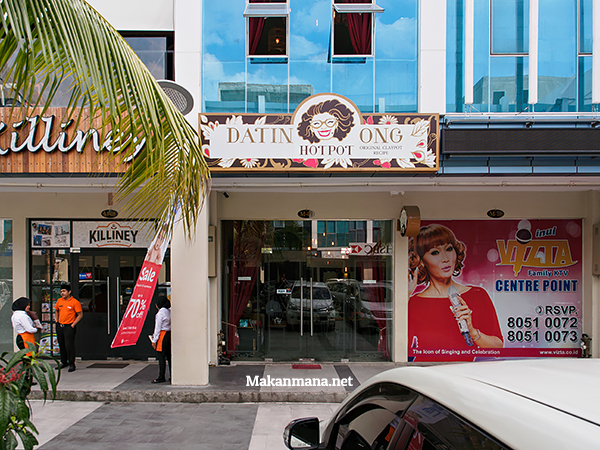
Datin Ong Hotpot yang berlokasi di ruko Center Point sejajar dengan pintu keluar J.Co ini meskipun tidak luas-luas banget tapi lumayan nyaman untuk duduk. Designnya simpel aja, tetapi cukup homey dengan suasana oriental yang kental.
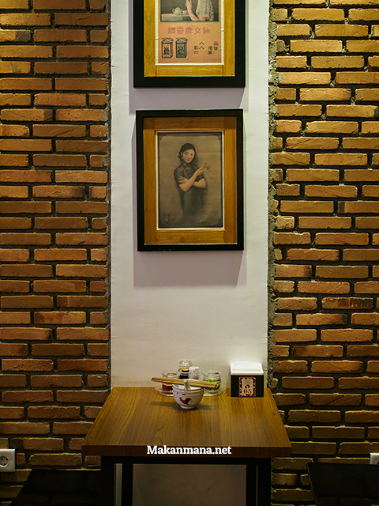
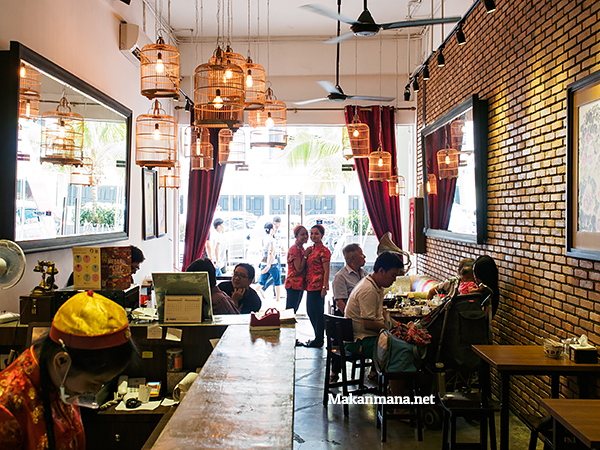
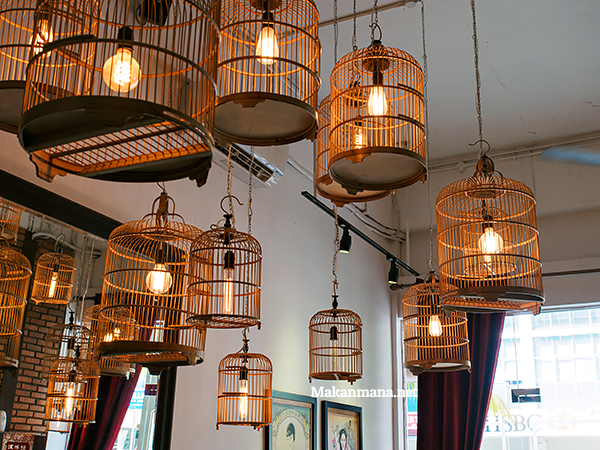
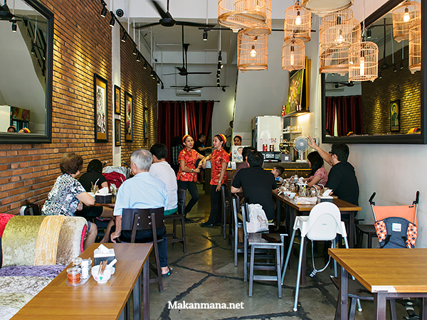
Lantunan tembang lagu-lagu nostalgia mandarin dari Teresa Teng Li Cin yang tidak pernah mati oleh zaman, ke-otentik-an hotpot berkuah, panas-panas nan wangi semakin berasa kental dan bikin kangen zaman 70’an.
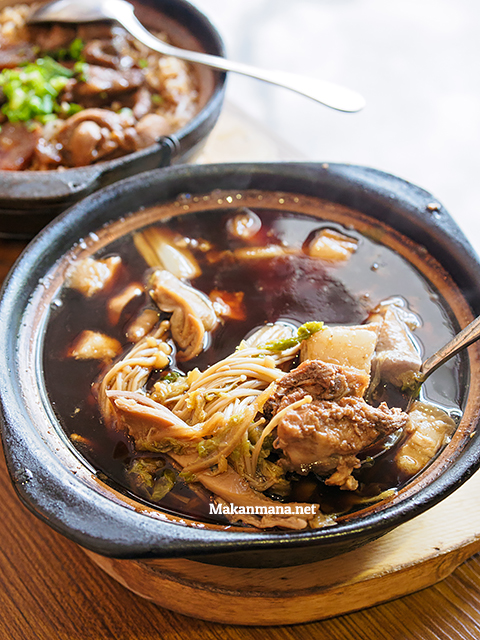
Datin Ong Bak Kut Teh.
Baiklah, mari kita mulai! Menu nomor 1, tentu saja Bak Kut Teh (porsi medium, harga Rp 58,000,-). Dengan rasa rempah yang lebih all-rounded dan baur di lidah, tulang rusuk babinya empuk dan porsinya elegan
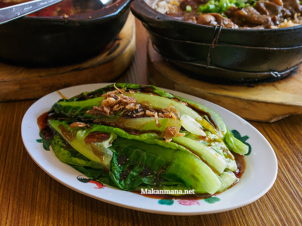
Sayur po li chai masak saus tiram (20rb).
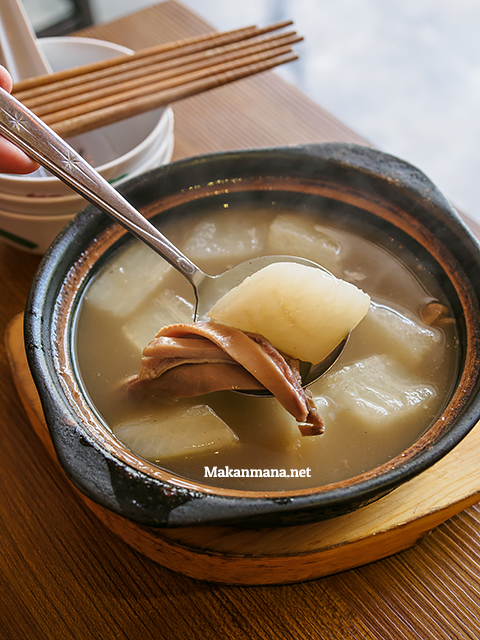
Hotpot lainnya yang kami pesan adalah Sup perut babi dengan merica putih (Medium, Rp 58,000,-). Katanya menu yang sangat ‘spesifik’ ini sudah disesuaikan dengan lidah orang Medan yang cenderung suka rempah yang tajam. Kalau memang suka dengan rasa merica dan pork belly menu ini boleh dicoba. Bagi yang sukanya tanggung-tanggung, jangan coba-coba deh.
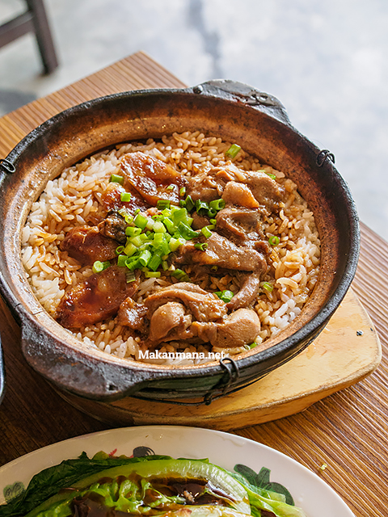
Main course lainnya yang terbilang wajib dipesan adalah Claypot rice dengan daging ayam, ikan asin dan lap chiong yang langsung dimasak di atas hot pot. Panas, gurih dan wangin, menu seharga Rp 38,000 ini salah satu yang terbaik di kota Medan.
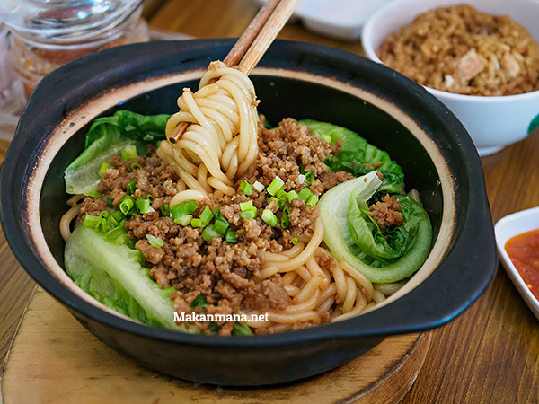
Bi Sua Daging Cincang kering (Rp 33,800,-). Dinamakan Bi Sua karena ini terbuat dari tepung beras (semacam bihun, tapi bertekstur tebal dan warna lebih kekuningan) dan diimpor langsung dari Hong Kong.
Digarnish dengan daging cincang, masakan yang satu ini punya aroma sesame oil (minyak wijen) yang berat. We had to order extra because it’s so good, tapi buat yang ga demen bau wijen, you’ve been warned.
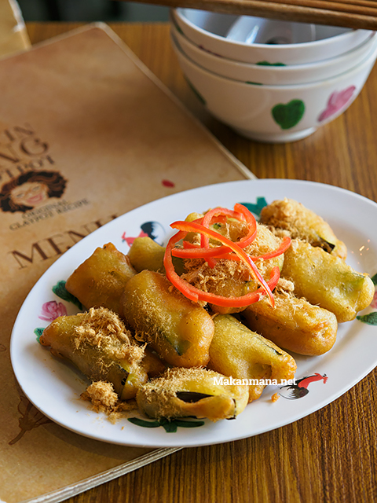
Ada lagi Terong goreng yang ditaburi pork floss (Rp 28,000) yang tidak terlalu remarkable tapi cukup enak untuk melengkapi menu-menu lainnya.
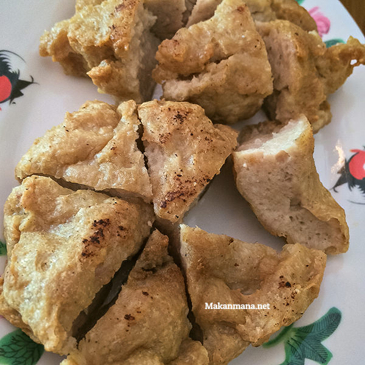
Pancake Ikan Asin (Rp 30,000) yang silap mata begitu keluar udah langsung ludes dalam waktu 2 menit. Bakso daging dan ikan asin ini empuk dan tidak terlalu asin untuk dimakan langsung sebagai cemilan tanpa nasi.
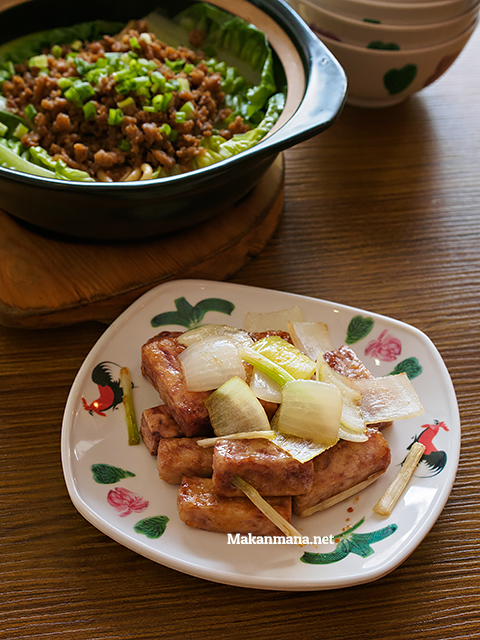
Talas goreng saos manis ini sebenarnya lebih cocok dihidangkan sebagai appetizer sambil menunggu hidangan utama karena ukuran dan porsi yang kecil serta rasanya yang sedikit manis dan wangi.
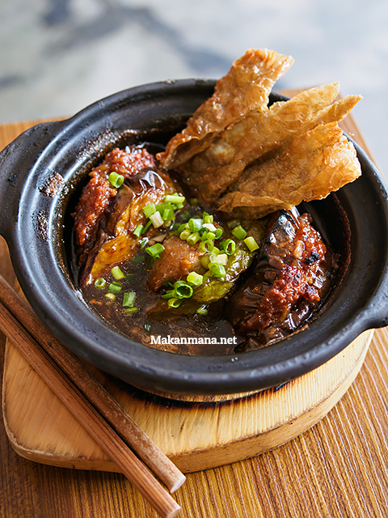
Yong Tau Fu Saos Tauco (30) dihidangkan dengan saos tauco dalam wadah claypot yang panas. Menu ini salah satu menu baru dan masih terkesan experimental. Sayangnya kali ini kami tidak mencicipi ocra dan cabe merah besar yang biasa dijumpai di Yong Tau Fu di Malaysia. Dari segi rasanya, ada sedikit tendensi keasinan, dan lebih cocok dimakan bareng nasi putih.
Datin Ong Hotpot
Ruko Center Point